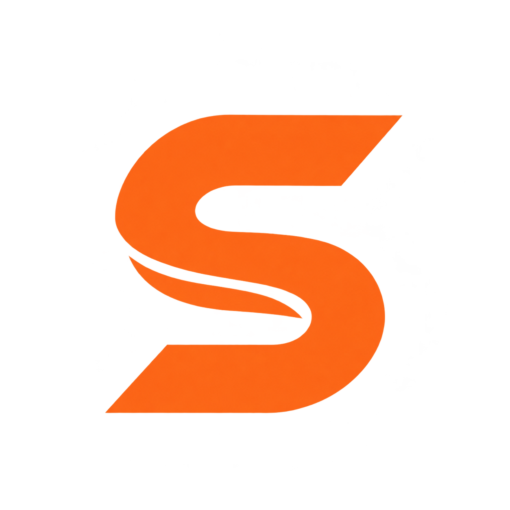

01
Flow
Clean / confident
Sumi48px
24px
A ribbon-shaped S. A direct link to the name, with a strong, compact silhouette.

SumiA ribbon-shaped S. A direct link to the name, with a strong, compact silhouette.
A sweeping ink gesture. Softer curves and a rising finish give Sumi a more personal character.
A frame with play in the center. The clearest connection to watching anime on phones and TV.
A motion flare with an S-shaped cut. An energetic direction inspired by anime movement.
Selected: 04 Spark · 18 November 2026. Vector master · Sumi wordmark